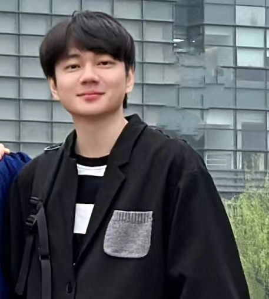

Github link: https://github.com/jasonrayshd
Email: jiachenlei@zju.edu.cn
I am a graduate student. I received my master degree at Cyberspace Security Lab Zhejiang University.I was advised by Professor Kui Ren and Professor Zhongjie Ba. My current interests are Generative Modeling, Forgery Detection, 3D Reconstruction, Video Learning, etc.
Currently, I am working on two research topics:
(1) Mitigate the high training expenses of Diffusion model.
(2) Self-supervised multi-modality learning on ego-centric videos.
News
[2023.03.31] Received master degree at Zhejiang University
[2022.07.07] Birthday of my homepage